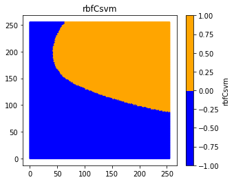
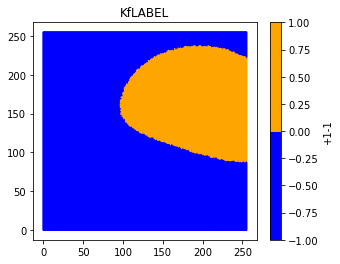

In [1]:
# -*- coding:UTF-8 -*- ＃
#导入模块
import sys
import time
import random
import numpy as np
import matplotlib.pyplot as plt
import math
from matplotlib.colors import ListedColormap
from sklearn.svm import SVC
from sklearn.preprocessing import StandardScaler
from ipywidgets import interactive,FloatSlider
sys.path.append(r"C:\Users\zhang\Desktop\exeserise")
import mymodule as MYD
In [2]:
n_samples=1000
XB,yb=MYD.makeblods(n_samples)
XR,yr=MYD.makerandoms(n_samples)
XC,yc=MYD.makecircles(n_samples)
XH,yh=MYD.makeHelixs(n_samples)
XAS = [XB, XR, XC,XH]
YAS=[yb,yr,yc,yh]
XBzoom=MYD.ZoomIn(XB,1); XRzoom=MYD.ZoomIn(XR,1); XCzoom=MYD.ZoomIn(XC,1); XHzoom=MYD.ZoomIn(XH,1);
XASzoom=[XBzoom,XRzoom,XCzoom,XHzoom];
cor = ListedColormap(['Blue', 'Orange'])
titlename=['two blob','two random','two circle','two heixl']
cmap=[cor,cor,cor,cor]
MYD.DrawManyChart(XAS,YAS,cmap,24,4,titlename,10,1,4)

In [3]:
Xzip,points=MYD.makeGrids()
plt.figure()
plt.scatter(points[:,0],points[:,1],s=0.009)
plt.show()
np.random.shuffle(points)

In [4]:
cor = ListedColormap(['Blue', 'Orange'])
lableSVM=[]; scoreSVM=[];
Kernelfunction=['linear','poly','rbf','sigmoid','precomputed'];
L=len(points); a=1
number_of_points = int(a*L)
p = points[0:number_of_points]
DI=0
modelSVM=SVC(C=1, kernel=Kernelfunction[2],gamma=0.0001)
tempmodule=modelSVM.fit(XAS[DI],YAS[DI])
lableSVM.append(tempmodule.predict(p))
scoreSVM.append(tempmodule.score(XAS[DI],YAS[DI]))
allSV=tempmodule.support_vectors_
intercept=tempmodule.intercept_
axishu=tempmodule.dual_coef_
print(axishu)
MYD.DrawChartColorBar(p,lableSVM,cor,5,4,'rbfCsvm','rbfCsvm')
labeiSVC=tempmodule.predict(allSV)
plt.figure(figsize=(4,3))
plt.scatter(allSV[:,0],allSV[:,1],c=labeiSVC,s=20,cmap=cor)
plt.show()
[[-0.35085514 -0.45539746 -1. -1. 1. 0.44189485
1. 0.36435775]]


In [5]:
SVMallabelrbf=[];
for l in range(0,len(allSV)):
SVMallabelrbf.append(MYD.rbfK(p,allSV[l],40));
SVMallabelploy=[];
for M in range(0,len(allSV)):
SVMallabelploy.append(MYD.polyD(p,allSV[M],2));
SVMallabelSigmid=[];
for N in range(0,len(allSV)):
SVMallabelSigmid.append(MYD.precomputedK(p,allSV[N],40));
corSVM=plt.cm.get_cmap('RdBu')
PP=[p,p,p,p,p,p]; alllaebl=[SVMallabelrbf[2],SVMallabelrbf[5],SVMallabelploy[2],SVMallabelploy[5],SVMallabelSigmid[2],SVMallabelSigmid[5]];
titlename=['rbfsvc2','rbfsvc5','polysvc2','polysvc5','precomputedSVC2','precomputedSVC5']
cmap=[corSVM,corSVM,corSVM,corSVM,corSVM,corSVM]
MYD.DrawManyChart(PP,alllaebl,cmap,30,4,titlename,2,1,6)
plt.figure(figsize=(6,6))
labelHE=[];
for j in range(0,len(SVMallabelrbf[0])):
for i in range(0,len(SVMallabelrbf)):
maxIndex=0
if(SVMallabelrbf[i][j]>=maxIndex):
maxIndex=SVMallabelrbf[i][j]
labelHE.append(maxIndex);
plt.scatter(p[:,0],p[:,1],c=labelHE,s=1,cmap=corSVM);
plt.title("AllSVC-rbf")
plt.show();
plt.figure(figsize=(6,6))
for i in range(0,len(SVMallabelploy)):
plt.scatter(p[:,0],p[:,1],c=SVMallabelploy[i],s=1,cmap=corSVM);
plt.title("AllSVC-PLOY")
plt.show();
plt.figure(figsize=(6,6))
for i in range(0,len(SVMallabelSigmid)):
plt.scatter(p[:,0],p[:,1],c=SVMallabelSigmid[i],s=1,cmap=corSVM);
plt.title("AllSVC-Sig")
plt.show();


In [6]:
axishu=np.array(axishu[0])
sumYKA=MYD.Multiplyonedata(SVMallabelrbf[0],axishu[0])
for fi in range(1,len(allSV)):
tempYK=MYD.Multiplyonedata(SVMallabelrbf[fi],axishu[fi])
sumYKA=MYD.addarray(sumYKA,tempYK)
sumYKA=MYD.MatrixAddoneData(sumYKA,intercept)
sumYKA=np.array(sumYKA);
finalLabel=[];
for LI in range(0,len(sumYKA)):
if(sumYKA[LI]>0):
finalLabel.append(1)
else:
finalLabel.append(-1)
corfinal=plt.cm.get_cmap('RdBu_r')
MYD.DrawChartColorBar(p,sumYKA,corfinal,5,4,'rbfCallsvm','rbfCallsvm')
MYD.DrawChartColorBar(p,finalLabel,cor,5,4,'KfLABEL','+1-1')


In [7]:
axishu=np.array(axishu[0])
sumYKA=MYD.Multiplyonedata(SVMallabelploy[0],axishu[0])
for fi in range(1,len(allSV)):
tempYK=MYD.Multiplyonedata(SVMallabelploy[fi],axishu[fi])
sumYKA=MYD.addarray(sumYKA,tempYK)
sumYKA=MYD.MatrixAddoneData(sumYKA,intercept)
sumYKA=np.array(sumYKA);
finalLabel=[];
for LI in range(0,len(sumYKA)):
if(sumYKA[LI]>0):
finalLabel.append(1)
else:
finalLabel.append(-1)
corfinal=plt.cm.get_cmap('RdBu')
MYD.DrawChartColorBar(p,sumYKA,corfinal,5,4,'rbfCallsvm','rbfCallsvm')
MYD.DrawChartColorBar(p,finalLabel,cor,5,4,'KfLABEL','+1-1')
---------------------------------------------------------------------------
IndexError Traceback (most recent call last)
<ipython-input-7-41ea089c6f35> in <module>()
1 axishu=np.array(axishu[0])
----> 2 sumYKA=MYD.Multiplyonedata(SVMallabelploy[0],axishu[0])
3
4 for fi in range(1,len(allSV)):
5 tempYK=MYD.Multiplyonedata(SVMallabelploy[fi],axishu[fi])
IndexError: too many indices for array
In [ ]:
In [ ]: